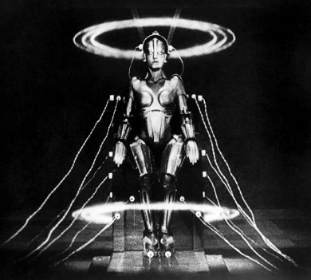

Yapay zekâ ve bilişsel güçler
Makinelerin düşünebileceği fikrinin akıl çelici bir yanı var. Ne de olsa bazı makineler düşünebiliyor. Bizler düşünüyoruz mesela. Ve bizler son derece karmaşık fiziksel sistemlerden, diğer bir deyişle makinelerden başka neyiz ki?
Ama birden karşıt düşüncenin çekimine kapılıyoruz. Düşünen varlıklar olduğumuz gerçeği bizim sadece son derece karmaşık fiziksel sistemlerden veya makinelerden daha fazla bir şey olduğumuzu göstermiyor mu? Ne de olsa makineler düşünemezken bizler düşünebiliyoruz. Hangi yoldan gitmeliyiz?
Turing Testi
Bildiğimiz kadarıyla düşünen makinelere en yakın şeyler bilgisayarlardır. Öyleyse meseleyi “Bilgisayarlar düşünebilir mi?” sorusu çevresinde araştırmak aydınlatıcı olabilir. Bilgisayarların bizleri şaşırtabilecek şeyler yapabildiği bir gerçek. Satranç oynayan bilgisayarların en yetenekli büyük ustaları yenebildiğini gördük. Bilgisayarlar matematikçilerin ispatlayamadığı matematik teoremlerini ispatladılar (bunların en ünlüsü dört renk teoremidir; teoreme göre sonlu sayıda bölgeden oluşan bir harita, birbirine sonsuz sayıda nokta boyunca komşu olan iki bölgenin renkleri birbirinden farklı olmak üzere boyanacaksa, bu işlem için dört rengin yeterli olduğunu söyler. Teorem 1976’da Apel ve Haken tarafından bilgisayarla kanıtlandı. Bu matematik tarihinde bir bilgisayarın ispatladığı ilk teoremdir). Şimdi sandalyesinde oturmuş pi sayısının ondalık açılımındaki bir sonraki basamağı hesaplayan birini gördüğümüzde onun düşündüğünü söylemekten hiç çekinmeyiz. Öyleyse, aynı işi yapan bir bilgisayarın da düşündüğünü söylememiz gerekmez mi? Bilgisayarlar şeyleri gözetler, ayarlar ve bizleri bu şeyler hakkında uyarır. Öyleyse onların bütün bunları akılla veya düşünceyle yaptıklarını kabul etmekte zorlanmak, belki de kendimiz hakkındaki yanlış anlayışın beslediği (bkz. Makinedeki Bir Hayalet miyim?) bir önyargı olamaz mı?

MASCHINENMENSCH (kadın robot) Yönetmenliği Fritz Lang
(1890-1976) tarafından yapılan Metropolis (1927) filminden.
Bilgisayar çağının başlangıcında İngiliz matematikçi Alan Turing bu yaklaşımı Turing testi denilen ünlü bir teste döktü. Alan Turing’in 1950 yılında yazdığı makalesinin temel derdi, bir makinenin düşündüğünü söylemenin mantıksal olarak mümkün olup olmadığıydı. Bu teste göre, bir insan, bir makine ve bir sorgulayıcı (insan) ayrı ayrı kabinlere yerleştirilir. Sorgulayıcı ne insanı ne makineyi görebilir ve duyabilir. Sadece bir uçbirim ekranı aracılığıyla onlarla iletişim kurabilir. Sorgulayıcının görevi, insana ve makineye yazı ekranından yönelttiği sorular aracılığıyla insanı ve makineyi ayırt etmektir. Eğer sorgulayıcı, insan ile makineyi ayırt edemezse, makine Turing’e göre zeki olarak nitelendirilir. 1950’lerde birçok bilgisayar bilimci kısa zamanda bu testi geçecek makinelerin yapılacağına inanıyordu. Ama “yapay zekâ” (AI) üzerine bunca yıllık çalışmadan sonra artık o kadar da iyimser değiliz. En iyi şekilde programlanmış bilgisayarların bile oldukça sınırlı testleri geçebilmesi ancak sorularımızı son derece sınırlı tutmamıza bağlı. Bunun nedenini anlamak konumuz açısından önemlidir.
Öncelikle dijital bir bilgisayarın işleyişi hakkında biraz düşünmemiz gerekiyor. Bilgisayar programları girdileri alır ve sabit kurallara göre çıktılar verir. Makineler sunulan verileri –piksel örüntüleri, bir mikrofon aracılığıyla ses dalgaları gibi– çeşitli şekillerde işleyebilirler. Hesaplama yapabilmek için veriyi 0’lar ve 1’ler dizgisine veya bu dizgilere tekabül eden elektriksel uyarım örüntülerine dönüştürmek zorundadırlar. Hesaplamanın girdileri ve çıktıları bu dizgilerdir. En sonunda bir çıktı biz insanlar için daha kullanışlı olan bir şeye dönüştürülebilir: ekranda görülen bir cümleye veya bir mikrofon aracılığıyla ses dalgasına.
Şimdi, hesaplama sabit kurallara göre ilerlemek zorunda olduğundan, eğer Turing testini geçebilecek kadar “yetkin bir sistem” oluşturacaksak, onun belleğini insanların bildiği “temsiller”le doldurmamız gerekir. Bilgisayara girdiye tepki olarak belleğinde depolanmış verilere erişmesini ve onları dönüştürmesini sağlayan kuralları yüklemeliyiz. Girdi bir komutlar kümesi olarak ele alınır, verilere erişilir ve çıktı bütün bunların bir fonksiyonudur.
Kucağınıza Oturabilir miyim?
İlk sorun bizim gerçekten bildiklerimizin miktarıdır. Yapay zekâ beklentilerine karşı klasik saldırısında Herbert Dreyfus “lokantaya gitme örneği”ni kullanmıştır. Bilgisayarımızın belleğine lokantalar hakkında bir yığın veri yüklediğimizi varsayın. Böylece o “çorba tatlıdan önce mi gelir?”, “yemeğe başlamadan önce insanlar oturur mu?” ya da “garsonlar ne yapar?” gibi soruları cevaplayabilir. Ancak bizim bildiğimiz ama onun bilmediği daha o kadar çok şey vardır ki. Ona insanların masaya giysilerini değil, şapkalarını çıkararak oturduklarını; birbirlerinin kucağına oturmadıklarını ya da ayaklarını karşısındakinin omzuna dayamadıklarını; yemeği ağızlarıyla yediklerini; içeriye silahlı bir soyguncu ya da bir gergedan ya da başka bir şey daldığında yemeği bırakabileceklerini söylemeyi unutabiliriz. Bu bilgileri parça parça yüklesek bile bunlardan çok daha fazlasını da yüklemeyi unutacağımız kesindir.
Bu sorunu aşmayı başardığımızı varsayalım. Bu kez de başka bir sorun çıkar karşımıza: “ilgi” ve “birleştirme” sorunu. Makine “garsonlar ne yapar?” sorusunu cevaplayabilir (yemek servisi). Çok güzel! Garsonlar (kural olarak) yemek servisi yaparlar. Bilgisayar sadece “garsonlar yemek servisi yapar” diyen bir kuralı izler. Bu yüzden ona garsonların ne yaptığı sorulduğunda bizim esnekliğimizi veya koşullara uyma becerimizi tam olarak taklit edemez. Lokantadan içeri silahlı bir soyguncu girerse garsonlar ne yaparlar? Ya da lokantanın önünden bir tören alayı geçse? Bu duruma bağlı olarak değişir. Eğer garson eski bir askerse soyguncuyla boğuşabilir, ama malulen emekli bir askerse veya artık bir “pasifist”se soyguncuya saldırmayacaktır. Eğer lokantada çocuklar varsa garson onları töreni seyretmeye çağırabilir, ama bu çocuklar şu afacan yumurcaklardan değilse, garsonumuz böyle bir şeye hiç yeltenmeyebilir. Burada filozofların “zihinsel olanın bütünselliği” dedikleri şeyle karşı karşıyayız: Bildiğimiz şeyler sayısız yoldan etkileşir ve verili bir sorunun doğru cevabına ayarlanır. Bilgisayarın belleğine çok sayıda olguyu yüklemek yetmez, bunları nasıl düzenleyeceğini de söylememiz gerekir; neyin neyle ve hangi yoldan ilgili olduğunu da belirtmeliyiz. Bu da bildiklerimizi daha sonraki sayısız durumla nasıl birleştireceğimizle ilgili kurallardır.
Özetle, sağduyu bilginin özümsenerek tepkinin buna göre ayarlanmasını bilmeyi gerektirir. Zekâ esneklik ister. Kural yönetimli bilgisayarlar esneklikten yoksundur. Bilgisayarın basmakalıp tepkileri onu kısa zamanda ele verecektir.
Ne Tür Bir Makine?
Ufukta belki zihinsel olanın bütünselliğinden daha temel olan bir sorun var. Bu John Searle’ün ünlü (ya da kötü ünlü) Çin odası düşünce deneyiyle etkili bir şekilde sunduğu bir sorundur. Kendinizi iki pencereli bir odada düşünün. Bir pencereden üstünde “anlamsız çizgiler” bulunan kâğıt parçaları veriliyor. Bulunduğunuz odada bu türden “çizgiler” karşısında ne yapmanız gerektiğini bildiren komutları içeren kitaplarla dolu dev bir kütüphane var. Siz bu talimatları takip ederek nottaki çizgilere karşılık gelen çizgileri seçip kâğıt parçalarına yazıyorsunuz ve bu kâğıt parçalarını diğer pencereden dışarı veriyorsunuz. Şimdi, siz hiç farkında değilsiniz ama aslında Çince bir Turing testinden geçiyorsunuz! Gelen kâğıt parçaları Çince yazılmış sorularken dışarıya verilen kâğıt parçaları Çince yazılmış cevaplar. Searle’e göre, komutlar ne kadar iyi olursa olsun, siz Çinceyi anlamamaktasınız. Dışarıdaki Çince konuşanlar içeride Çince okuyabilen ve anlayabilen birisinin olduğuna hükmedebilirler, ama bu konuda tamamen yanılmaktadırlar. Tıpkı bilgisayarın sadece 0’lar ve 1’ler dizgisini kaydetmesi gibi, siz de burada sadece şekilleri kaydediyorsunuz. Ama bu şekillerin neyi temsil ettiğini hiç anlamıyorsunuz. Bu benzerlikten hareketle Searle şu sonuca varıyor: Bilgisayar yönlendirdiği ikili dizgilerle hiçbir şey anlamaz; onun düşünce ve zekâ görüntüsü sahtedir.
Searle’ün düşünce deneyi son derece canlıdır. İlk başta ondan etkilenmemek güçtür. Ama konu üzerinde biraz daha düşünmekte fayda var. Acaba o gereğinden fazlasını kanıtlamıyor mu? Odadaki sizin ve dijital bilgisayarın, yalnızca girdilerin şekillerine veya sentaksına tepki veren sentaktik makineler olduğunuzu kabul edelim. Searle’ün iddiası nedir? Ona göre bir sentaktik makine Turing testini geçme konusunda ne kadar yetkin olursa olsun, –semantiği terimlerin neyi temsil ettiğini veya ne anlama geldiğini anlama olarak aldığımızda– o semantik bir makine olmayacaktır. Ama hiçbir sentaktik makinenin semantik makine olamayacağını savunurken çok dikkatli olmalıyız; yoksa bu yolun sonunda bizzat kendimizin de şeyleri temsil edemediğimizi kanıtlamış olabiliriz. Zira Searle’ün kanıtlaması, eğer sağlamsa, tam da şeyleri kendi kendimize “temsil etme” fikrine saldırmaktadır.
Bunu anlamak için daha önceki (bkz. Makinedeki Bir Hayalet miyim?) tartışmalarımızı hatırlayalım. Tartışmamızda ben Paris bulvarlarını hayal ederken bir nörofizyolog beynimi inceliyordu. Onun bulduklarının bulvarlarla hiçbir bağlantısı yoktu. Bulduğu birbirini uyaran nöronlardı. Şimdi, “Şanzelize Caddesi boyunca dükkânlar var mı?” diye sorduğunuzu ve bunun beni –doğru olarak “var” cevabını vermeden önce– düşlemimin içine yerleştirdiğini varsayalım. Sorunuzu işittiğim zamandan buna karşılık gelen ses dalgaları örüntüsünü çıkarmama kadar geçen zaman içinde meydana gelen şeylerin Paris’le hiçbir bağlantısı yoktur. Burada sadece ses dalgaları örüntüsüne tepki veren, elektriksel dalgalar yayan ve nihayetinde çıktı olarak bir başka ses dalgası örüntüsü üreten bir sistem vardır. Görünüşe göre, bu sistemde “çizgiler”den veya “dalgalar”dan başka bir şey yoktur. Öyleyse, bizler de semantik makinelerden ziyade sentaktik makineleriz. Görünen bu!
Yanlış Yere Bakmak
Ancak bilinci araştırmanın yolunun bu olmadığını gördük (bkz. Makinedeki Bir Hayalet miyim?); dolayısıyla temsil ve anlam meselesinin de bu şekilde araştırılamayacağını kabul etmek zorundayız. Searle Çin odasındaki kişinin Çince anlamadığını söylerken haklıdır. Ama bu, nöronların İngilizce anlamadığını bulgulamaya benzer. Bunu başaran Ben, yani tüm sistemdir.
Bu durumda soru şuna dönüşür: Bizi sırf sentaktik makinelerden semantik makinelere dönüştüren nedir? Searle bunu “biyolojik görkemliliğimize” bağlama eğilimindedir: Bizler doğru malzemeden yapılmışız, bilgisayarlar ise yapılmamış. Bu hiç de açıklayıcı bir düşünce değildir. Bizi John Locke’la aynı noktaya taşır: Tanrı’nın inayetine. Bilgisayarlardaki silikonu veya diğer malzemeleri bizi meydana getiren karbonla değiştirmek işin nasıl döndüğünü anlamımıza pek de yardımcı olmaz.
Bazı filozoflar ise temsillerin doğruluk ve yanlışlık boyutuna sahip olduğuna dikkat çekmektedir. Bizler şeyleri yetersiz, uygunsuz, yanlış temsil edebiliriz. Ama yine keyfi fiziksel çizgilere doğruluk veya yanlışlık atfetmeyi Tanrı’nın inayetine bağlamak hiç de açıklayıcı olmayacaktır. Bir temsilin hangi güç sayesinde doğru veya yanlış olarak adlandırılmayı hak ettiğini anlamamız gerekir. Şeylerin nedensel sonuçları doğru veya yanlış değildir: Onlar sadece vardır.
Yine de bu bağlamda her cevap “nedensel birlikte değişimle” başlamalıdır. Sistemler şeyleri onlarla birlikte değişerek temsil ederler. Hayvan çevreye uyum sağlamak üzere evrilir. Elektriksel çizgilerle temsil edilenler çevredeki şeylerdir; bu da çevrede bulunan (koku, ses gibi) özelliklerin, sinyalin ve (yeme, kaçma veya başka bir eylem şeklindeki) çıktının özelliklerini belirlediği anlamına gelir. Basit hayvanlar için girdiyle çıktının bağlantısı basmakalıp olabilir: Feromonun kokusunu aldığında erkek güve hemen kokunun geldiği kaynağa yönelir. Daha karmaşık hayvanlar daha karmaşık tepkilerde bulunurlar. Bir hayvan dikkatini avcı veya av üstünde sabitleyebilir ve davranışını bakışının nesnesinin yaptıklarına göre ayarlayabilir: Burada tıpkı bir satranç oyuncusunun hasmının hamlelerini tahmin etmesinde olduğu gibi, bakışının nesnesinin hamlelerini “önceden gören”, yani onların “temsil”ini oluşturabilen hayvanlardan söz ediyoruz. Ve burada en azından doğruluğun veya yanlışlığın dayanağını buluyoruz. Eğer hayvan bir “bakış”a karşısındaki avcı olduğu halde avmış gibi karşılık verirse, işler onun için “yanlış” gitmiştir.
<>
Evrim insanları en azından çoğu hayvanın
başaramadığı şekilde, çevresinden koparmıştır.
<>
Evrim insanları en azından çoğu hayvanın başaramadığı şekilde çevresinden koparmıştır. Bizler zihin sahnemizde stratejileri prova edebiliriz. Hafızamızdaki şeyler üzerine düşünebiliriz, imgelemimizde onları önceden görebiliriz. Buna zihnin “yönelimselliği” veya “yönelmişliği” denir. Searle’ün Çin odasındaki çizgi güdümleyicisi çizgileri gördüğünde zihnini yönlendiren bir şey yoktur; ama önümdeki sayfa üzerindeki anadilimdeki sözcüklerin böyle bir işlevi vardır.
Yeni İstikametler
Eğer doğru yol buysa, o zaman makinedeki yönelimselliğin de her şeyden önce bu “yönelmişliğe” benzemesi gerekir. Bunu çevreyle etkileşmek üzere programlanmış Yıldızlar Savaşı’ndaki R2D2 gibi bir robotta bulabiliriz. Bu bir ev robotu olabilir. Bu robot yerdeki çay bardağından gelen görsel sinyalleri aldığında, onu kaldırmak üzere kolunu uzatıyor veya bardağı çayla dolduruyor. Repertuarı biraz daha geliştiğinde onun eylemlerini tasvir etmek için “düşünce dili” kullanılması doğal olacaktır: “Bak bardağın doldurulması gerektiğini düşünüyor.” Ona yönelik olarak Daniel Dennett’in “yönelimsel tutum” dediği tavrı benimseyebiliriz. Bu, onun davranışlarını öngörmemizin en iyi yolu olabilir. Düzensiz bir oda gördüğümüzde, yapılacak çok şey olduğundan R2D2’nun çok gürültü çıkarabileceğini; bu yüzden de odaya yarın girmesinin daha iyi olacağını düşünebiliriz. Bilgisayarlarla satranç oynayanlar da bu tür şeyler düşünebilmektedir: “Bu program vezirin olabildiğince geride tutulması gerektiğini; fillerden ziyade atlarla saldırmanın yeğlenmesi gerektiğini düşünüyor.”
Bazı zihin felsefecilerine göre “yönelimsel tutum” benimsendiği anda meselenin sonuna gelinir. Makinenin bu terimlerle tasvir edilebilmesi, onun zeki olup olmadığı ya da düşünüp düşünmediği ve aslında ne düşündüğü –“boş bardağın doldurulması gerektiğini düşünür”– gibi sorunları çözer. “Yorumculuk” adı verilen bu konuma göre zihinsel olguların varlığı yalnızca “bakanın gözündedir”: Yorumcu bir kişinin/şeyin “düşünüyor olduğunu” tasdik ederse, o kişi/şey düşünüyordur; eğer hiç kimse bunu tasdik etmezse o kişi/şey düşünmüyordur. Bu doğruysa, makinenin yapması gereken tek şey bizim onun davranışını düşünce diliyle tasvir etmemizi sağlayacak şekilde davranmasıdır. Bu görüşe göre, bu bütün meseleyi çözer. Ne yazık ki benim bu konuda şüphelerim var. Bu anlayış bizim kendimizin düşünmesi meselesine hiç dokunmuyor. Bir bardağın doldurulması gerektiğini düşünebilen benim, uygun şekilde davranan bir robotu aynı şeyi yapan bir şey olarak tasvir etmeyi yararlı bulabileceğimi söylemek bir şeydir. Ama zekâ veya düşünceyle ilgili her şeyin bundan ibaret olduğunu söylemek kesinlikle daha ileri bir adımdır. Kendi zekâmızın ve düşüncemizin böylesine ciddi bir işin üstesinden gelip gelemeyeceği kuşkuludur. Zekâmız temel bir yönelimselliğe sahiptir, ama onun bu ya da şu sisteme bu kulübün onur üyeliğini bahşedebilmesi gerçekte hiçbir şeyi açıklamaz.
Deneye ekleyebileceğimiz bir şey de güdülenme meselesidir. Bir makinenin kendi hallerini izleyen devreye sahip olduğunu varsayın (arabalar da zaten böyle bir düzenek vardır). Bunun işler olması gerektiği gibi gitmediğinde, –tıpkı hayvanların sıkıntılı bir durumda yaptığı gibi– “tehlike sinyali” verdiğini düşünün. Makineye “kaçınma veya arama” düzeneği yerleştirdiğimizi kabul edelim. Makine bir tehlike sinyali verdiğinde yağ veya yeni batarya (ya da neye ihtiyacı varsa onu) bulmak üzere harekete geçiyor. Evrim bizi bu şekilde yapmıştır, ama makinemiz için onu biz tasarlamak durumundayız. Bu örnekte de yine kendimizi onun isteklerinden ve ihtiyaçlarından ve bunları karşılamak için oluşturduğu stratejilerden söz ederken buluruz. Böylece o hesaba katılması gereken bir faile dönüşür (bataryaların önünde duruyorsanız sizi devirebilir). Onun kararlı bir şekilde batarya arayışı sentaks ve semantik arasında bir geçiş etkisi uyandırır. Bunu yapmasını tam olarak hangi 0’lar ve 1’ler dizgisinin sağladığının önemi yoktur (sonuçta biz de kendimizle ilgili buna denk düşen şeyleri bilmekten çok uzağız). Önemli olan onun davranışının bataryaya ve yağa ihtiyacı olması uyarınca açıklanmasına yol açan bir betimleme düzeyinin, bir yorumlama düzeyinin var olmasıdır.
Lokanta örneğindeki bildiklerimizin miktarındaki çokluk ve onlara gösterdiğimiz tepkilerdeki esneklik sorununa dönersek, öncelikle Turing testinin adil olup olmadığından şüphe edebiliriz. R2D2’nin benimle birlikte Turing testine tutulduğunu farz edin. Benim yapabildiğim ama onun yapamadığı bir şey benim kendimi model olarak kullanarak insanların yapabileceklerini öngörmemdir. Bu, lokantaya bir gergedan girdiğinde insanların ne yapacağının bana açıkça bildirilmesi anlamına gelmez. Ama ben zihin sahnemde bir senaryo oluşturabilir ve kendimi bir tür turnusol kâğıdı gibi kullanabilirim. Bir “çevrimdışı simülasyon” yürütebilirim: Ben kesinlikle yemeği bırakırdım! Ve bu beni insanların yemeklerine ara vereceği doğru cevabına yöneltir. R2D2 kendini bu şekilde kullanamaz, çünkü onun sistemi diğer insanların sistemlerini yansıtmaz. Ama o zaman onu böyle bir teste tabi tutmak hiç de adil olmayacaktır. Bu “yabancı kültürlerden” insanları cevapların İngiliz kriketi veya Amerikan beysboluyla tanışıklığı gerektirdiği bir zekâ testine tabi tutmaya benzer. Eğer benim R2D2 ile tanışıklığım sınırlıysa, onun hakkındaki sorular karşısında çaresiz kalabilirim. Onun gergedanlara karşı tepkisi hakkında açık bir şekilde bilgilendirmemişsem ne diyeceğimi bilemem. R2D2 tarafından yürütülen bir Turing testini geçemem.
Aslında bu mesele hakkında daha anlamamız gereken çok şey var. Benim özellikle dikkat çekmek istediğim bir konuya geçelim. Çevrenin zincirlerinden kendimizi kurtarmayı başarabildiğimizi söyledim. Bu, düşüncelerimizin halihazırda nedensel olarak etkileşimde bulunduğumuz şeylerle sınırlı olmadığı anlamına gelir. Bu da zihnin “yönelimselliği”nde veya “yönelmişliği”nde “nedensel birlikte değişim”den daha fazlasının söz konusu olduğunu gösterir. Bu da en gelişmiş kontrol sistemlerinin işleyişlerini araştırarak kendi düşünmemiz hakkında pek bir şey öğrenemeyeceğimiz korkusunu uyandırır. Bu konu hakkında ne düşünürsek düşünelim felsefenin ödevi, düşünmenin ne olduğuna ve düşüncenin nasıl meydana geldiğine ilişkin parça-parça araştırma yapmanın yerine sihir veya umutsuzluğu koymak değildir.